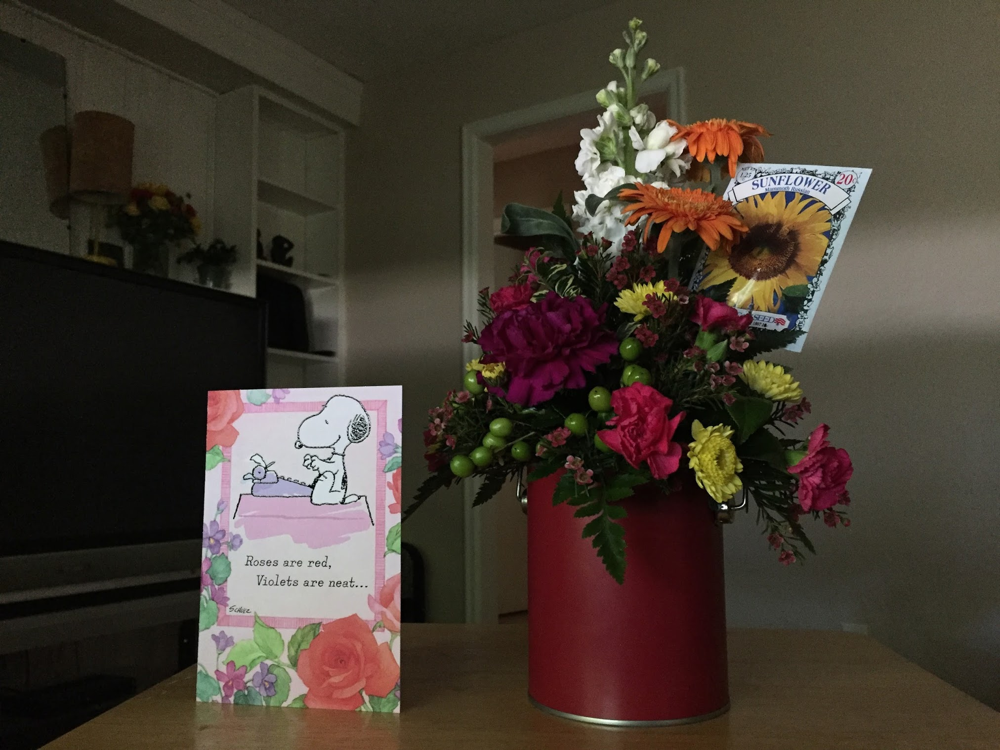

5 Things I've Learned From Breaking My Ankle
2016 was a hard year for many of us. It was one of the hardest years I've yet experienced. The hardest times can be the times we learn the most. These are three things I learned last year.
Me in the ER right after I broke my ankle.
It feels like your life is over, it's not
When I broke my ankle in April 2016 my whole world stopped. All the activities I had planned were cancelled. I was left alone on my couch for three weeks. I didn’t know how my life would ever get back to where it was. Bad news, it
doesn’t. When something so traumatic happens, it changes you. I did get my life back to a new normal, and it was not the way it was before I broke my ankle. I don’t go bouldering anymore. That’s a good thing. I don’t feel like
my work will fall apart if I’m not there. In a way I have more freedom. Your life will go on. It may not look the same, and that’s ok.
Time will do funny things to your head
If you’re used to getting up every morning and going to a day job, lying on a couch for three weeks is like the opposite of that. Time goes faster when you get into a routine. A week at work feels like two days on a couch. So three
weeks on the couch felt like months. The day just goes on and on. It makes it feel like it’ll never end. When agonizing about how long it will take to get better, when you’ll get back to work, it’s good to remember time is moving
differently now. One weird side note; by the third week, time sped back up to normal. Lying on the couch was my new routine. And when I went back to work. Time started moving so slowly again.
You learn how much you are cared for

Flowers and a card from friends
You’re worth more than what you can give and do for people. That’s something I learned. I thought when I broke my ankle my friends would bolt. Like she’s damaged goods now. So not true. I had so many people calling me to check
on me. I had people coming over to help me pass the time on the couch. I got flowers, cards. It was a lesson in love.
Make the best of it
Instead of spending your time worrying about how work is going, or what you’re missing out on, just enjoy yourself. How often do you get an excuse to lie on the couch for three weeks? Think of all the shows one could watch!
It’s all in your head.
When one has SO much time to think, it can easily lead to a dark place. “No one will like me anymore.”, “I lose friends because I can’t go anywhere or do anything.” , “I’ll never be normal again.” It’s so easy to get sucked into negative
thinking. Changing your thoughts will change your experience. Break out of negative thoughts, focus on the good. It’ll make it so much easier.